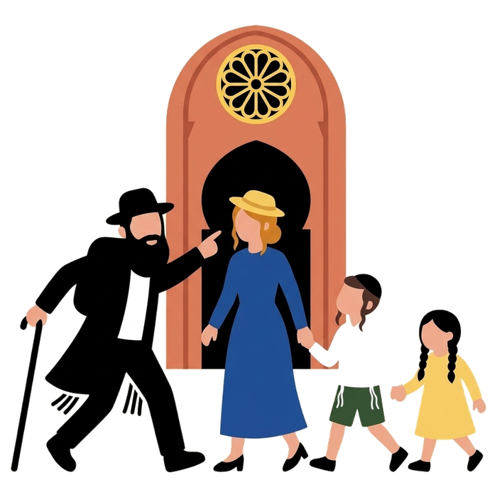
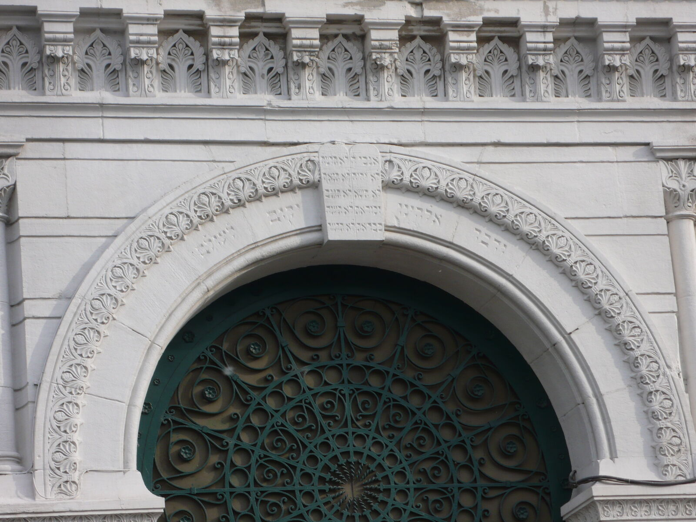
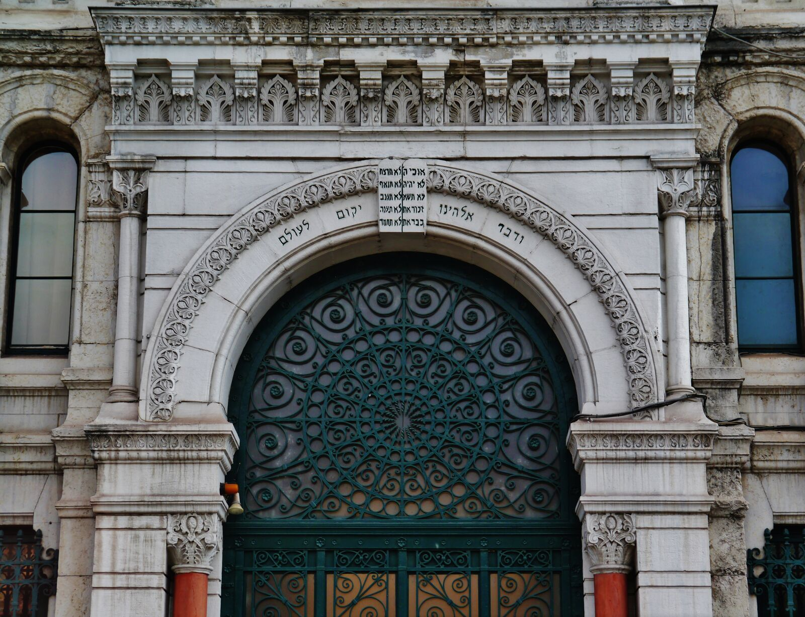

Home / Jewish Lyon guide / Grande Synagogue of Lyon
Grande Synagogue of Lyon
inside the building closed to visitors
The Grande Synagogue of Lyon, 13 quai Tilsitt on the bank of the Saône, was inaugurated in 1864 and is still a working synagogue. It is closed to visitors outside the Heritage Days. Mishpacha Tours holds the special authorisation required to enter and takes private groups inside on its 2 h 30 Jewish Lyon tour, 290 € per group, subject to opening hours and security on the day.
- Inaugurated 1864
- 13 quai Tilsitt, Lyon 2e
- Architect Abraham Hirsch
- Checked 7 October 2026

History in short
The foundation stone was laid on 20 May 1863. The synagogue was inaugurated on 23 June 1864.
- Architect. Abraham Hirsch (1828-1913), a Jewish architect who later became the city architect of Lyon.
- Style. Neo-Byzantine.
- Heritage status. Inscribed as a historic monument on 5 December 1984.
- The war. The building was attacked during the Occupation. Grenades were thrown during a service in December 1943. On 13 June 1944 the militia arrested the worshippers present, and deportations followed.
Today the synagogue belongs to the Consistoire of Lyon and follows the consistorial rite. Services are held daily.




Why you cannot just walk in
The Grande Synagogue is a place of prayer, protected like every synagogue in France today. It is closed to visitors outside the Heritage Days, the annual weekend when French monuments open to the public.
A guided visit also depends on the synagogue's own hours and on security on the day. We ask in advance. Your guide confirms with you before the walk begins, and tells you plainly if the doors stay closed.
If you come to pray, you are welcome at services. Arrive a few minutes early and carry your ID. The times are in the practical section below.
Our visit, step by step
- 1
We meet in the Vieux Lyon
The walk starts on rue Juiverie, in the streets where the medieval Jewish community lived. Your guide tells that story first, so the synagogue makes sense when you reach it.
- 2
We walk to quai Tilsitt
We cross the Saône and reach 13 quai Tilsitt on foot. Your guide checks the security situation before anyone goes near the door.
- 3
We go inside
Subject to the day's opening hours and security, we enter. Your guide explains what you see, answers your questions and lets you take the time you need.
- 4
We finish on rue Sainte-Catherine
The walk ends where the war story of Lyon's Jews meets the Resistance. This is the Jewish Lyon tour, 2 hours 30 minutes.
What you will see inside
- The Holy Ark. The focal point of the hall, photographed on this page.
- The women's gallery. Galleries run above the main floor.
- The dome. A blue dome with sixteen windows covers the hall.
- Twelve columns. The central nave stands on twelve columns, one for each of the twelve tribes.
Photography rules are set by the synagogue and can change with the day. Your guide tells you before you go in.
Practical details 1
- Grande Synagogue de Lyon Consistorial rite, Consistoire de Lyon (ACIL). Shacharit Sunday 8:00, weekdays 7:00. Mincha and Arvit 18:30. Times read on 8 September 2026. They change with the season: check before you come.13 quai Tilsitt, 69002 LyonMap
Source: consistoiredelyon.fr (address, phone, prayer times, read 8 September 2026); lyon.fr. Visitor access: not published.
How to get there
- Metro. Bellecour, lines A and D, is the nearest station. From there it is a short walk to the quai.
- From the Vieux Lyon. Cross the Saône on foot and follow the quai Tilsitt.
- Shabbat. Lyon is a walking city. Candle-lighting times are on our synagogues page.
On the map
Quai Tilsitt, Lyon 2e.
Questions we get
Can I visit the Grande Synagogue of Lyon on my own?
No. It is closed to visitors outside the Heritage Days. Worshippers are welcome at services. Mishpacha Tours holds the special authorisation required to enter: our Jewish Lyon tour is the only tour that takes you inside, subject to the day's opening hours and security.
When was the Grande Synagogue of Lyon built?
The foundation stone was laid in 1863 and the synagogue was inaugurated on 23 June 1864. The architect was Abraham Hirsch.
What are the prayer times?
Shacharit is at 8:00 on Sunday and 7:00 on weekdays. Mincha and Arvit are at 18:30. We read these times on 8 September 2026 and they change with the season. Check with the Consistoire before you come.
Is there a security check?
Expect one at the door, as in every synagogue in France. Carry your ID and arrive a few minutes early.
What if the synagogue is closed on the day of my tour?
Your guide checks with you before the walk begins. If entry is not possible, the rest of the tour runs as planned and she tells you what you would have seen.
Keep reading
Sources: consistoiredelyon.fr; lyon.fr; fr.wikipedia.org (Grande synagogue de Lyon). Compiled by Mishpacha Tours from these sources. Checked 7 October 2026.